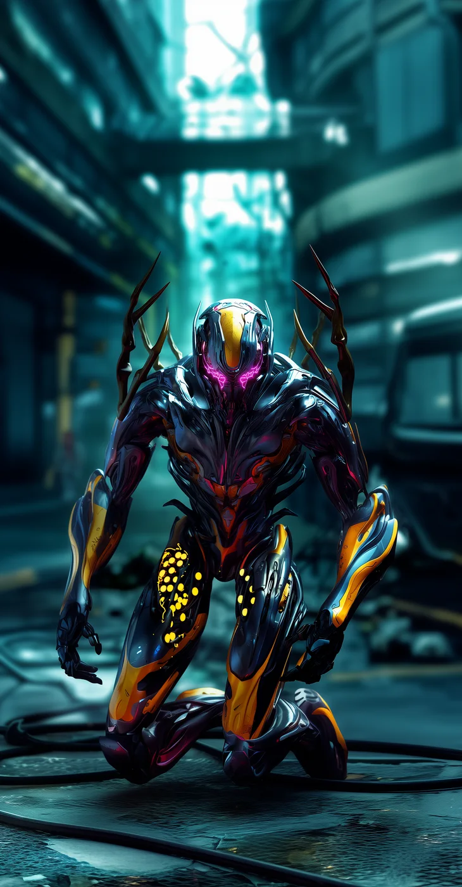
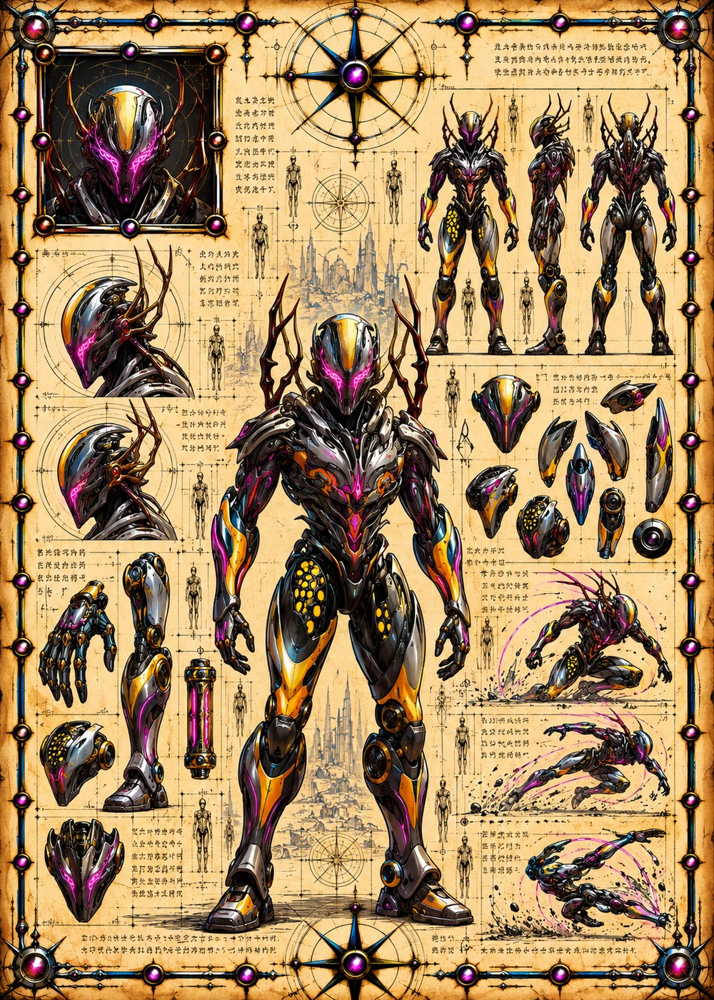

©
©
GENEZYS ARCHIVE · Earth 2 · Synthbot
Kseka
Field Projector


Archive record
Kseka projects barrier fields for the Mortis Syndicate, though few of them protect anyone but Kseka. The Aegis Dome drains an enemy's energy before the shot lands. On Earth 2, Kseka's pilot is a junior engineer of the Syndicate, and is determined not to stay junior for long.
Combat signature
Aegis Dome
210 Cosmara
150 Animus
200 Vitalis
Projects spherical barrier field: Reduces the target's Cosmara by 110 and deals 50 damage.
Genezys 04:01 ™&©2026LEGIONS
Return to LEGIONS